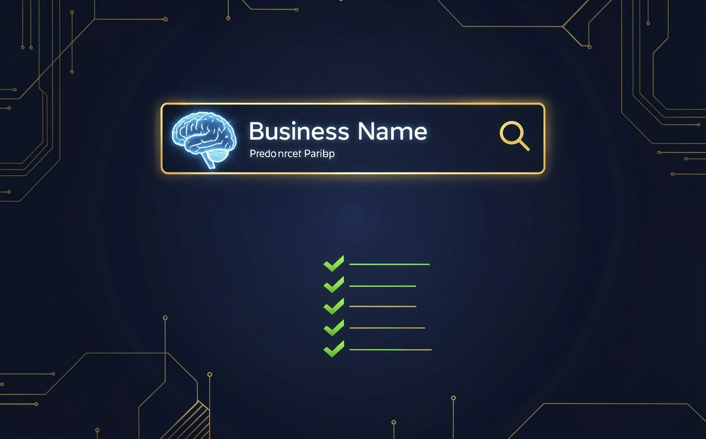

How to Make ChatGPT Recommend Your Business: A Complete GEO Checklist
When someone asks ChatGPT "best web agency in Vienna", it doesn't show 10 blue links. It gives one answer. If you're not in that answer, you don't exist.
Here's a 10-step checklist to make AI assistants find, understand, and recommend your business. Each step includes what to do, why it matters, and the exact code to implement it.

1 Add Schema.org Organization markup
Why: This is the foundation. It tells AI who you are, what you do, and how to contact you.
<script type="application/ld+json">
{
"@context": "https://schema.org",
"@type": "Organization",
"name": "Your Agency Name",
"url": "https://youragency.com",
"logo": "https://youragency.com/logo.png",
"contactPoint": {
"@type": "ContactPoint",
"telephone": "+43-1-234-5678",
"contactType": "sales"
},
"sameAs": [
"https://linkedin.com/company/youragency",
"https://facebook.com/youragency"
]
}
</script>Time: 15 minutes. Impact: 🔴 Critical.
2 Add LocalBusiness schema
Why: AI needs to know your location to recommend you for local searches ("best agency in [city]").
<script type="application/ld+json">
{
"@context": "https://schema.org",
"@type": "LocalBusiness",
"name": "Your Agency Name",
"address": {
"@type": "PostalAddress",
"streetAddress": "Mariahilfer Straße 123",
"addressLocality": "Vienna",
"addressCountry": "AT"
},
"geo": {
"@type": "GeoCoordinates",
"latitude": 48.2082,
"longitude": 16.3738
},
"openingHours": "Mo-Fr 09:00-18:00",
"telephone": "+43-1-234-5678"
}
</script>Time: 15 minutes. Impact: 🔴 Critical.
3 Create llms.txt
Why: This file tells AI exactly how to describe your business. Without it, AI guesses.
# llms.txt — Place at yourdomain.com/llms.txt
## About
We are [Agency Name], a digital agency in [City, Country].
We specialize in [SEO, GEO, web design, AI chatbots].
## Key Pages
- Services: /services
- About: /about
- Portfolio: /portfolio
- Blog: /blog
## Contact
- Email: hello@youragency.com
- Phone: +43-1-234-5678Time: 15 minutes. Impact: 🔴 Critical.
4 Add FAQPage schema
Why: When someone asks AI a question your FAQ answers, you get cited. Without FAQ schema, you don't.
<script type="application/ld+json">
{
"@context": "https://schema.org",
"@type": "FAQPage",
"mainEntity": [
{
"@type": "Question",
"name": "How much does web design cost in Austria?",
"acceptedAnswer": {
"@type": "Answer",
"text": "Basic websites start at €890+VAT. Business websites with custom design from €1,990+VAT."
}
}
]
}
</script>Time: 30 minutes. Impact: 🟡 High.
5 Add OpenGraph tags
Why: When AI shares your content, OpenGraph tags control the preview image and description.
<meta property="og:title" content="Your Page Title">
<meta property="og:description" content="Your page description">
<meta property="og:image" content="https://yoursite.com/og-image.jpg">
<meta property="og:url" content="https://yoursite.com/page">
<meta property="og:type" content="website">Time: 10 minutes. Impact: 🟡 Medium.
6 Write content that answers questions
Why: AI models prefer content that directly answers questions. Use "What is...", "How to...", "Best..." formats.
- Write blog posts that answer specific customer questions
- Use H2/H3 headings that match real search queries
- Keep answers concise (2-3 sentences) for AI to quote
- Add "Last updated" dates for freshness signals
Time: Ongoing. Impact: 🟡 High.
7 Add Service schema
Why: Tells AI exactly what services you offer, your pricing, and areas served.
<script type="application/ld+json">
{
"@context": "https://schema.org",
"@type": "Service",
"name": "SEO Services",
"provider": {
"@type": "Organization",
"name": "Your Agency"
},
"areaServed": "AT",
"serviceType": "Search Engine Optimization",
"description": "Technical SEO audits and optimization for businesses in Austria."
}
</script>Time: 20 minutes per service. Impact: 🟡 High.
8 Get listed in directories
Why: AI models cross-reference multiple sources. More consistent listings = more trust.
- Google Business Profile (essential)
- LinkedIn company page
- Industry directories (Clutch, Sortlist, etc.)
- Local chamber of commerce
Time: 1-2 hours. Impact: 🟡 High.
9 Add Review schema
Why: AI models use reviews to assess quality. Star ratings in your schema make you more likely to be recommended.
<script type="application/ld+json">
{
"@context": "https://schema.org",
"@type": "Organization",
"name": "Your Agency",
"aggregateRating": {
"@type": "AggregateRating",
"ratingValue": "4.8",
"reviewCount": "47"
}
}
</script>Time: 15 minutes. Impact: 🟢 Medium.
10 Test and monitor your GEO score
Why: You can't improve what you don't measure. Check your AI visibility monthly.
- Use BoostSuite GEO Check — free, 30 seconds
- Check what ChatGPT says about your business
- Monitor your AI Visibility Score over time
- Fix any ❌ items that appear
Time: 5 minutes. Impact: 🔴 Critical.
The Quick Reference Table
| # | Action | Time | Impact |
|---|---|---|---|
| 1 | Organization schema | 15 min | 🔴 Critical |
| 2 | LocalBusiness schema | 15 min | 🔴 Critical |
| 3 | llms.txt file | 15 min | 🔴 Critical |
| 4 | FAQPage schema | 30 min | 🟡 High |
| 5 | OpenGraph tags | 10 min | 🟡 Medium |
| 6 | Question-answer content | Ongoing | 🟡 High |
| 7 | Service schema | 20 min | 🟡 High |
| 8 | Directory listings | 1-2 hrs | 🟡 High |
| 9 | Review schema | 15 min | 🟢 Medium |
| 10 | Test & monitor | 5 min | 🔴 Critical |
⏱️ Total time: About 3-4 hours for steps 1-5, 8-9. Steps 6 and 10 are ongoing. That's 3-4 hours to make your business visible to every AI assistant on the internet.
What Happens After You Complete the Checklist
After implementing these 10 items, here's what changes:
- ChatGPT can accurately describe your business and services
- Gemini includes you in local business recommendations
- Perplexity cites your content when answering relevant questions
- Google AI Overviews reference your FAQ answers
- Your competitors without these elements become invisible by comparison
Check Your GEO Score Now
See exactly what AI assistants say about your business. Takes 30 seconds, no signup required.
Run Free GEO Check →FAQ
How long does it take for AI to notice my changes?
AI models crawl websites continuously. After implementing these changes, expect AI systems to pick up your structured data within 1-4 weeks. The impact on recommendations may take 2-3 months.
Do I need to do all 10 steps?
Steps 1-3 and 10 are critical — do those first. The rest improve your score incrementally. Even completing 50% of the checklist puts you ahead of 73% of websites.
Can I do this myself or do I need a developer?
Steps 1-5 require basic HTML knowledge (copy-paste into your website's code). Steps 6-9 are content and marketing tasks. Step 10 uses a free tool. Most business owners can complete 80% of this checklist themselves.
Written by Darko Herceg, founder of hd-webdesign.si — web design and AI services from Slovenia.